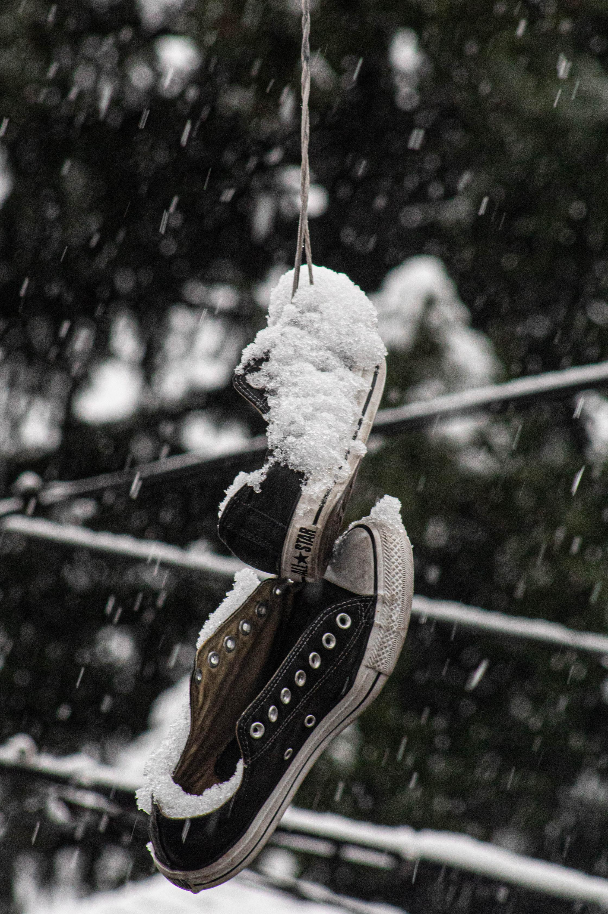
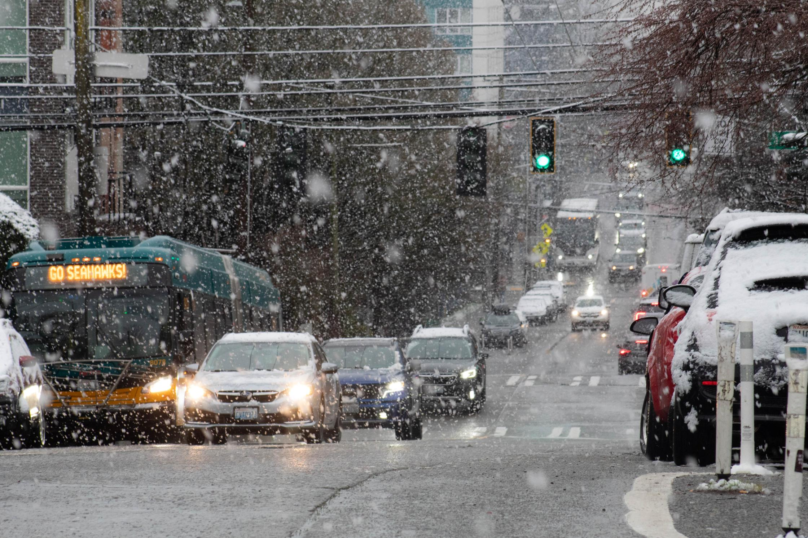
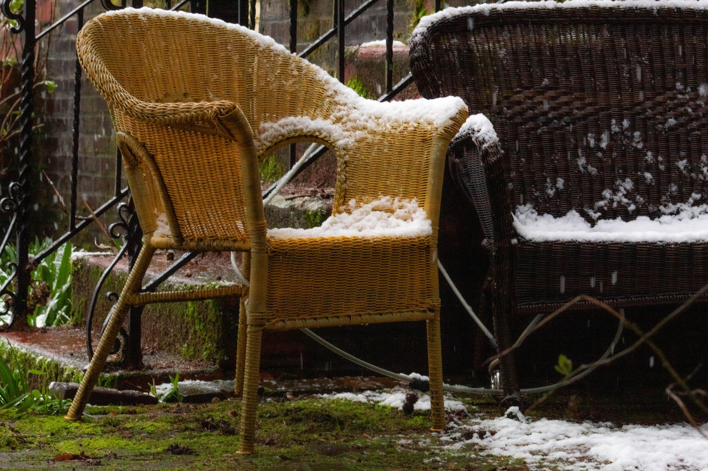
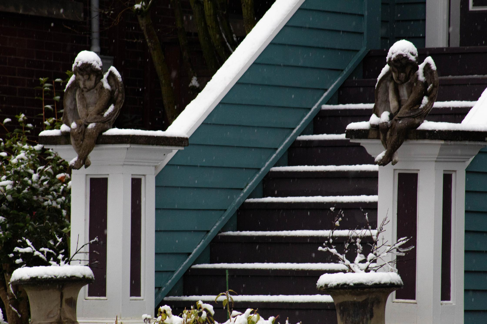
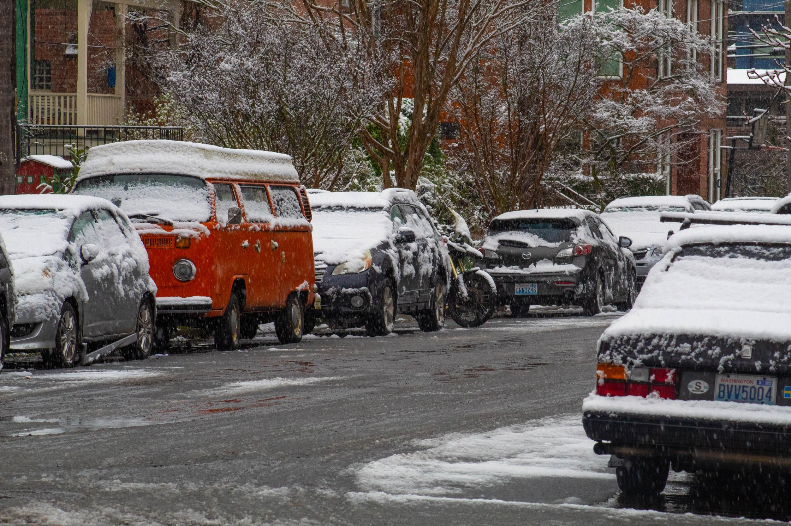
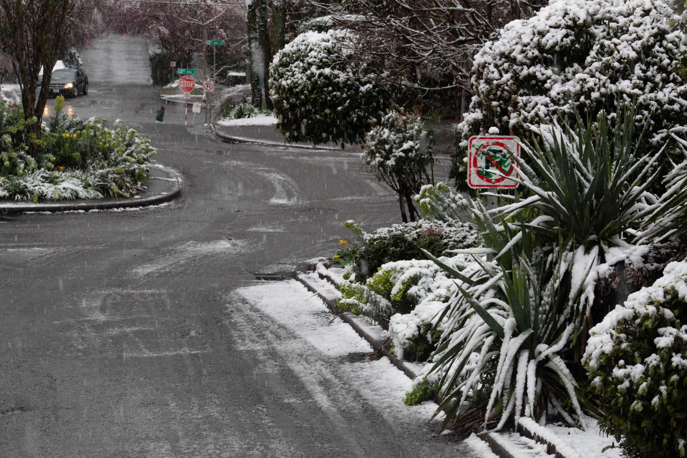
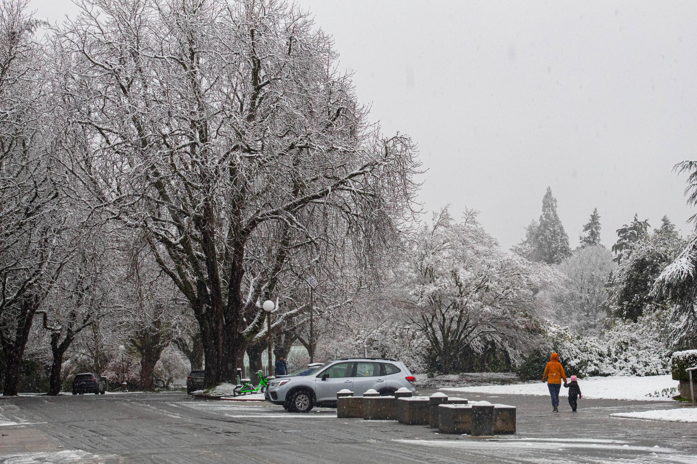

Mercer Harrison on Snow
March 15, 2026

Reader, I am Mercer Harrison. I've worn many hats over the years, including (with regret) a Goorin Bros. Fabyan Park Wool Pork Pie Hat purchased on eBay in 2010 one day after a Mumford and Sons' concert at the Paramount Theater.
That hat sits in my closet. Too expensive to donate to Goodwill, too of-the-era to be on my head when I'm outside the home.
But the hat most of you recognize on me is that of Senior Correspondent for Sindicato, covering News from the Neighborhood with a focus on local cafes and their suitability for remote work.

I take my work seriously. It's serious work. And serious work is done by serious people. So I am forced to take myself seriously.
You don't last twenty three years as a freelancer in Capitol Hill, Seattle without being serious. For Christ's sake, you don't become Senior Fucking Correspondent at Sindicato without lighting both sides of the wick every now and again.

Anyway. I'd love to rest, but it's become quite expensive to live. It was less expensive in 2003, of course, when I'd just moved to Capitol Hill from Los Angeles. While Colin Powell was out there pursuading leaders of nations to support the U.S. in Iraq, I'd been working an ad copy gig. American companies were swapping European words in the names of their products for something more patriotic. I came up with "Freedom Fries", which may be a surprise you. Something that's always surprised me: Powell or his mother chose to pronounce it "colon" instead of "call in". Did he try to change that when he got to college?

I needed a change, so I packed my 1986 Mercedes-Benz 560SL (still running like a long-legged track star, baby) and drove north. I'd played out the "Go West, young man" schtick. I moved every five years back then and covered most of the country. I thought getting to L.A. would get that out of my system but there aren't winters there. There's something unserious about that.
Seattle, on the other hand, acknowledges the human need for hibernation. A full six months of wet and dark between DST shifts when there's not much to do other than to lean back in a cafe chair, to cross your legs, to brood, to read The New Yorker, to sip espresso from a small cup, and eventually to write.
I came, I saw Mumford and Sons, I conquered Seasonal Affective Disorder.
And now I am 54 years old, well-settled in this city. I've sampled a bit of everything it offers. The menu changed over the years to be sure. So have I. (You'd never catch me writing a patriotic ad in today's climate). But I know Seattle and I know my life here and, I have to say, I rarely have the pleasure of being surprised anymore.

Leave it to nature to throw in a twist. Friday morning I walked into the living room, pulled the curtain and, cross my stone cold bachelor's heart, I said, "Well, fuck me sideways."
It was snowing thick wads.
It really doesn't happen here. Well it does, maybe once a winter. But you forget about it and then, when it happens, it's like you've turned over in bed and your lover's grown a Santa Claus beard and is still wearing last night's mascara. It's a little obscene. But also a surprise. Even surprisingly pretty.

I knew my phone would ring soon and it'd be my boss at Sindicato asking for some work on a quick turnaround. (So much for slow news. But it's true: Sindicato, going back to its founding days, has always covered snow in Seattle).
And yes, as I said before, my work is serious and so am I. But one thing I've learned is that you've got to pay attention when nature puts something out of the ordinary on your plate. And delicate, ephemeral beauty might be beauty's most evolved form.
Snow in Seattle doesn't last. When it comes, you pull the Canada Goose parka out of the closet, (you avoid eye contact with the pork pie hat), you put on your Wellies, and you go for a walk.
